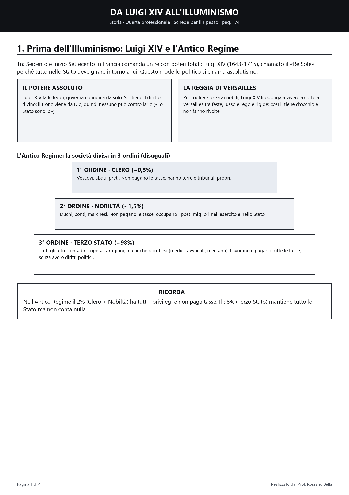
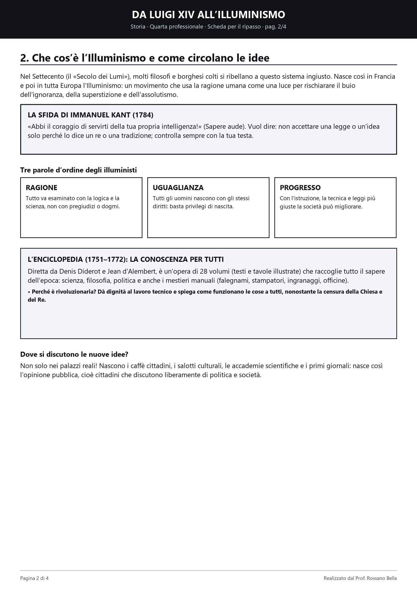
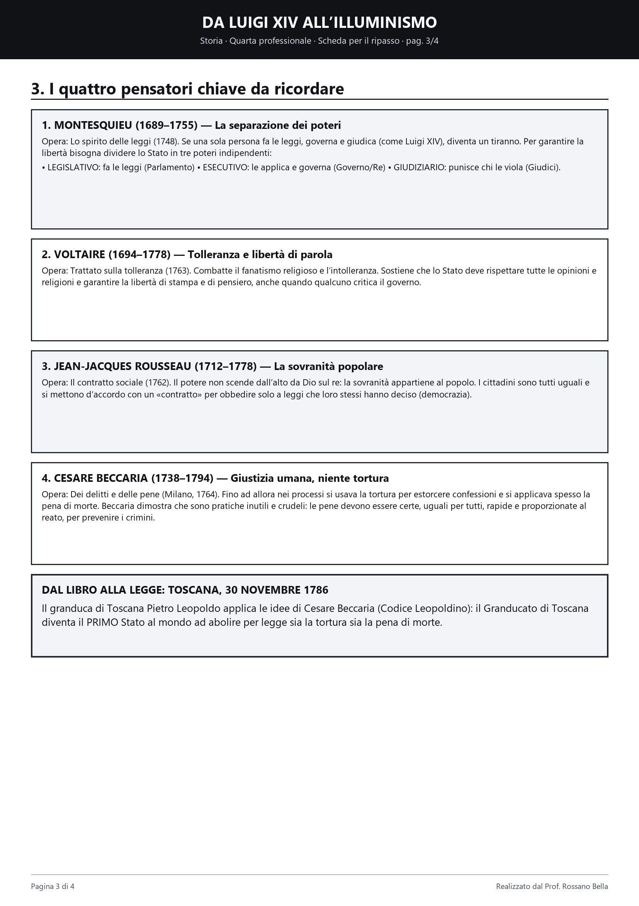
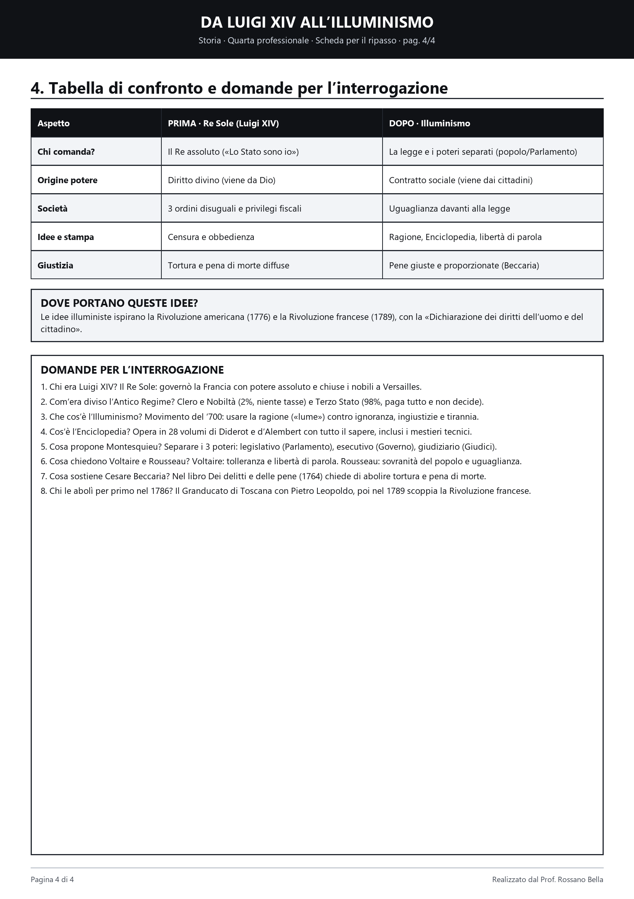

Storia · Quarta professionale
Da Luigi XIV all’Illuminismo
«Sapere aude! Abbi il coraggio di servirti della tua propria intelligenza!» Immanuel Kant, 1784
La video-lezione
~4 min · 8 slide- Luigi XIV & Versailles
- 3 ordini (2% vs 98%)
- Enciclopedia
- Montesquieu · Voltaire · Rousseau · Beccaria
- Toscana 1786 & Rivoluzioni
Il fumetto in 4 tavole
8 grandi vignette


Scorri o tocca i lati della tavola. Pizzica o doppio tap per ingrandire. «Schermo intero» sul telefono.
Otto domande per l’interrogazione
Tocca per aprire la risposta1. Chi era Luigi XIV e perché si chiamava Re Sole?
È il re di Francia (1643–1715) simbolo della monarchia assoluta: scelse il sole come emblema perché tutta la corte e lo Stato dovevano ruotare attorno a lui. Governava per diritto divino concentrando leggi, tasse ed esercito senza convocare gli Stati Generali (gli è attribuito il motto «Lo Stato sono io») e trattenne l’alta nobiltà nella reggia di Versailles per toglierle peso politico.
2. Com’era divisa la società nell’Antico Regime?
In tre ordini disuguali: 1° Clero e 2° Nobiltà (circa il 2%, hanno privilegi e non pagano tasse); 3° Terzo Stato (98%: contadini, artigiani e borghesi come medici e mercanti), che lavora e paga tutte le tasse senza poter decidere.
3. Che cos’è l’Illuminismo e cosa dice Kant?
È un movimento culturale del Settecento nato in Francia: la ragione è come una luce («lume») per combattere ignoranza, superstizioni e privilegi. Kant (1784) lo riassume nel motto Sapere aude: «Abbi il coraggio di usare la tua intelligenza».
4. Cos’è l’Enciclopedia e dove circolavano le idee?
Opera in 28 volumi diretta da Diderot e d’Alembert (1751–1772): raccoglie scienza, filosofia e anche disegni sui mestieri pratici, dando dignità al lavoro tecnico. Le nuove idee si discutono nei salotti, nei caffè e sui primi giornali.
5. Che cosa propone Montesquieu contro la tirannia?
La separazione dei tre poteri (1748): chi fa le leggi (legislativo, Parlamento), chi le applica (esecutivo, Governo) e chi punisce chi le viola (giudiziario, Giudici) devono essere diversi e controllarsi a vicenda.
6. Cosa difendono Voltaire e Jean-Jacques Rousseau?
Voltaire combatte il fanatismo e chiede tolleranza religiosa e libertà di parola. Rousseau (Il contratto sociale, 1762) afferma che la sovranità appartiene al popolo e tutti i cittadini sono uguali davanti alla legge.
7. Perché Cesare Beccaria è famoso in tutto il mondo?
Nel libro Dei delitti e delle pene (Milano, 1764) chiede di abolire la tortura e la pena di morte: lo Stato deve applicare pene certe, giuste e proporzionate al reato per prevenire i crimini, non per vendicarsi.
8. Quale Stato applicò per primo Beccaria nel 1786?
Il Granducato di Toscana, il 30 novembre 1786, con il codice del granduca Pietro Leopoldo (Codice leopoldino): fu il primo Stato al mondo ad abolire per legge tortura e pena di morte. Le idee illuministe ispirarono anche la Rivoluzione americana (1776) e, poco dopo la riforma toscana, la Rivoluzione francese (1789).
Scheda di studio da stampare
4 pagine A4 · alto contrasto


